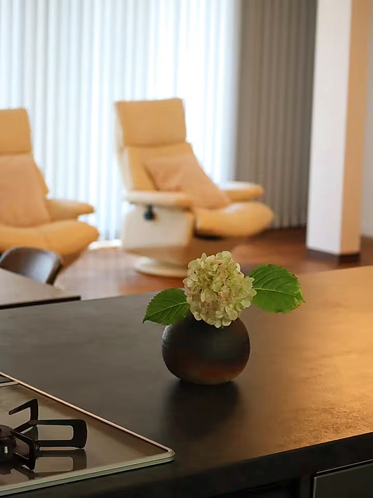

Kyoto · Fukuchiyama
集まる時間が、旅になる。
京都・福知山の一棟貸しの宿、EN。
Concept
ENは、京都府福知山市観音寺にある一棟貸しの宿です。
家族や友人との旅行、久しぶりに集まる親族とのひとときに。広々としたリビング・ダイニングにはプロジェクターを備え、映画を観たり、写真を見返したりしながら、同じ時間を楽しめます。
窓の外には穏やかな田園風景が広がり、庭では季節ごとにさまざまな花が咲きます。
「EN」という名前には、人と人との「縁」を大切にしたいという思いを込めました。

Gallery
ゆとりのあるリビング・ダイニングは、ENの中心となる空間です。プロジェクターで映画や動画を楽しんだり、旅の写真を見返したり。家族や友人と一緒に過ごす時間をお楽しみください。
グループやご家族での宿泊に対応した、複数のお部屋をご用意しています。お布団でゆっくりお休みいただけます。お部屋によって空調設備が異なりますので、大人数でのご宿泊の場合は事前にご利用条件をご確認ください。
冷蔵庫、電子レンジ、炊飯器、電気ケトル、コーヒーマシンなどを備えています。みんなで料理をしたり、ゆっくり食事を楽しんだり。必要な食材や調味料はご持参ください。
浴槽のあるバスルームをご利用いただけます。ご滞在中は、思い思いのペースでおくつろぎください。
庭には季節ごとにさまざまな花が咲き、福知山の自然を身近に感じられます。外の空気を感じながら、ゆっくりと流れる時間をお楽しみください。
Neighborhood
石垣と天守がどこまでも静かな街並みにそびえます。城下町の散策とあわせて、ゆったりとした時間をお楽しみください。
福知山を流れる一級河川。川辺の散歩や、季節ごとの景色を楽しめます。
境内に約1万株の紫陽花が咲く「あじさい寺」。関西花の寺二十五霊場の第一番札所で、初夏には参道を鮮やかに彩ります。
鬼伝説の残る山並み。新緑と紅葉の季節は、ドライブコースとしても人気です。
日本三景の一つ。松並木が砂嘴を縁取る景観は、日帰りのドライブ先としておすすめです。
入り組んだ海岸線と赤レンガ倉庫群が並ぶ港町。夕映えの時間がとりわけ美しい。
外湯めぐりで知られる温泉街。浴衣で石畳をそぞろ歩けば、日常をしばし忘れる時間に。
舟屋が並ぶ海に寄り添う村。日本の原風景が息づく、静かな湾です。
Access
JR山陰本線「高津駅」下車。所要時間・乗り継ぎは、路線検索（Googleマップ）でご確認ください。
京都縦貫自動車道「福知山IC」から約15分。ルート検索（Googleマップ）
House Rules
Reserve
空室カレンダー、宿泊料金、キャンセル条件のご確認からお支払いまで、Airbnbの予約ページで承っています。
Airbnbの予約ページへお電話でのお問い合わせ: 0773-21-6424
エアコンを備えた4部屋のみのご利用の場合、宿泊可能人数は13名までです。14名以上でのご利用をご希望の場合は、空調のないお部屋の使用条件を事前にご確認ください。
BBQセット・テントサウナのご利用には事前連絡が必要です。食材・飲み物・調味料はご持参ください。宿泊約款の要点はこちら。
チェックインは15:00〜22:00です。
チェックアウトは12:00までです。
予約状況により、12:00からのアーリーチェックインに対応できる場合があります。追加料金は5,000円で、当日現金にてお支払いいただきます。事前にご相談ください。
敷地内に無料駐車場を3台分ご用意しています。
お庭でBBQをお楽しみいただけます。BBQセットの利用料金は2,000円です。事前連絡が必要で、料金は当日現金にてお支払いいただきます。食材・飲み物・調味料はご持参ください。
ご利用いただけます。料金は2,000円で、当日現金払いです。準備が必要なため、事前にお知らせください。
衛生上の理由から、調味料や食材は常備しておりません。必要なものをご持参ください。
2歳以下のお子様は無料でご宿泊いただけます。ただし、無料宿泊のお子様には寝具やアメニティの提供がありませんので、必要なものをご持参ください。
お庭では小規模な手持ち花火のみご利用いただけます。打ち上げ花火や大きな音が出る花火、飛んでいく花火は禁止しています。
館内は全面禁煙です。喫煙される場合は、お庭の指定喫煙スペースをご利用ください。
エアコンを備えた4部屋のみを利用する場合、宿泊可能人数は13名までです。14名以上でのご利用をご希望の場合は、空調のないお部屋の使用条件を事前にご確認ください。
ペット同伴の可否については、事前にお問い合わせください。
Airbnbでご予約の場合は、予約画面に表示されるキャンセル条件をご確認ください。